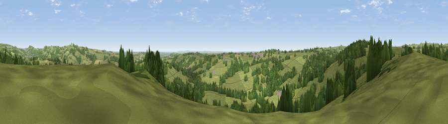

Viewpoint near Kirk Ireton
#16592 in England · top 15% of its area beats it · near Kirk IretonWhere it is
The exact computed spot (SK 26675 49275). Click the marker for map links.
The view, rendered

A 360° render of this exact spot computed from the terrain model, tree cover and land cover — summer colours, afternoon light, calibrated against photographs of famous viewpoints. Real trees, hedges and buildings will differ in detail.
The panorama
Grey silhouette: terrain skyline in each direction (720 bearings, Earth curvature and refraction included). Dashed green: skyline with trees (+15 m) and buildings (+8 m) as obstacles. Blue strip: how far the ground is visible on each bearing.
Where the view opens
Wedge length = distance to the farthest visible ground on that bearing (vegetation-aware). Rings at 10, 25 and 50 km.
What fills the view
70% grassland · 27% woodland · 2% cropland · 1% built-up
Angular shares of the visible panorama (visual magnitude), not map area. Landscape diversity 0.31 (0–1 Shannon).
Key numbers
More beautiful places nearby
The staircase of upgrades: each row has a higher view potential than everything closer. Driving times are estimates from straight-line distance, calibrated against real road routing — check an actual route before setting out.
| Place | Direction | Drive | Score |
|---|---|---|---|
| Viewpoint near Carsington | N · 3 km | ~8 min | 60.6 |
| Alport Height | ENE · 4 km | ~10 min | 73.9 |
| Tissington Hill | WNW · 12 km | ~22 min | 75.5 |
| Viewpoint near Stanton under Bardon | SSE · 41 km | ~60 min | 76.0 |
| Viewpoint near Mow Cop | WNW · 41 km | ~61 min | 78.9 |
| Viewpoint near Mow Cop | W · 42 km | ~61 min | 80.2 |
| Viewpoint near Little Wenlock | WSW · 75 km | ~99 min | 84.2 |
| The Wrekin | WSW · 76 km | ~100 min | 85.0 |
53.04009, -1.60361 · source: screening · position refined by local search. Computed location — check access rights before visiting.